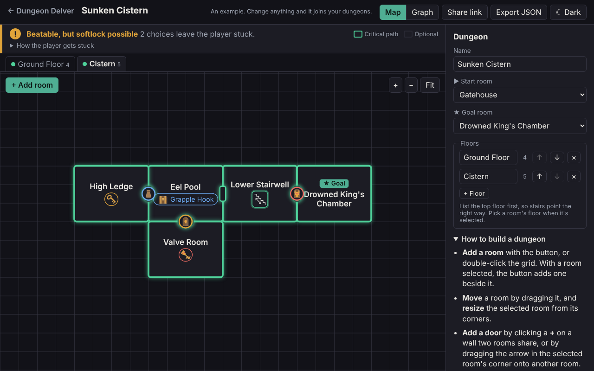
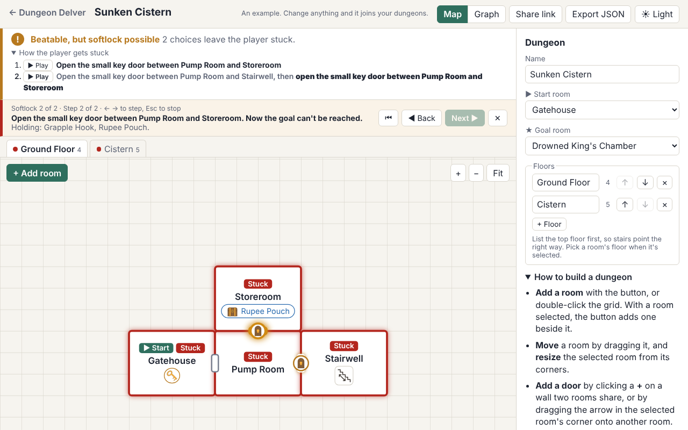
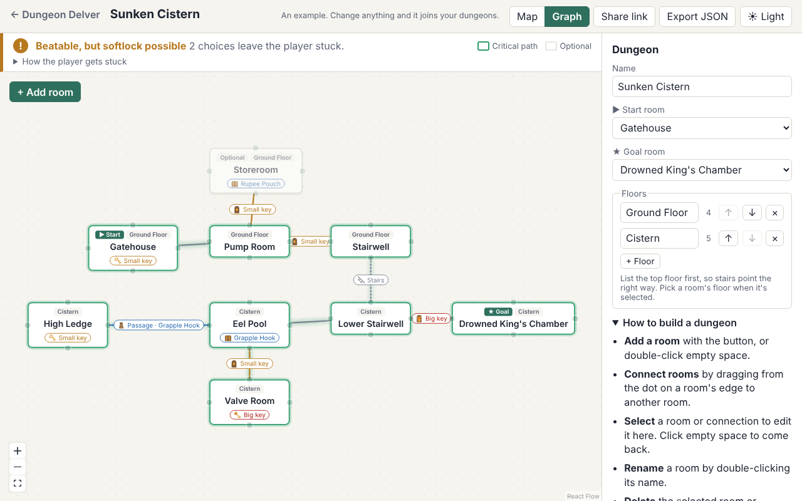
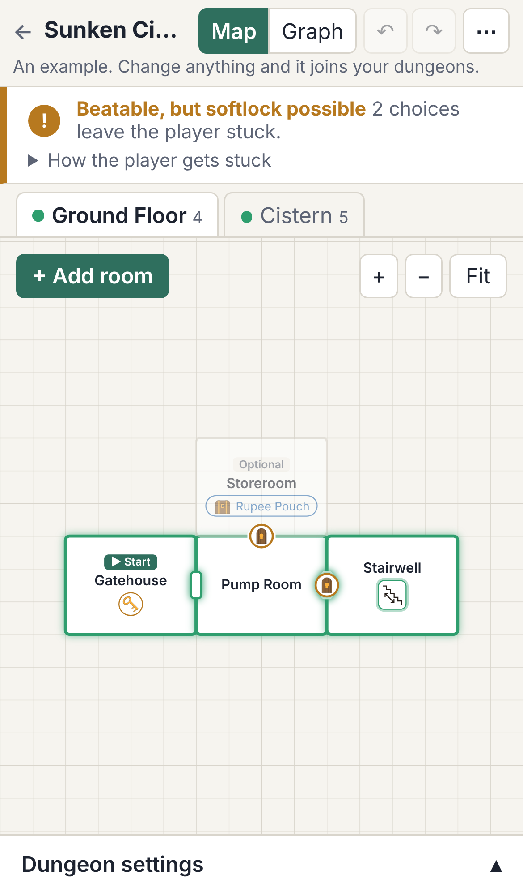

The Problem
Anyone who has designed a dungeon for a Zelda-style game, or for a tabletop RPG, knows the trap: a player spends a small key on the wrong door, or drops down a hole too early, and now the dungeon can't be finished. Those softlocks are easy to create and hard to spot by reading a map, because they depend on the order a player does things in.
Dungeon Delver lets you sketch how the rooms connect and what locks each connection: small keys, the big key, items like a hookshot, puzzles, and one-way drops. Then it tells you whether the dungeon can be beaten, every way a player could get stuck, which rooms are optional, which can't be reached, and what the critical path is. The results update as you edit.
Solo project: design, code, and the icon art
React 19 • Vite • JavaScript • SVG • React Flow • Vitest • GitHub Actions
Live, version 1.1 (October 2026)
Static site on GitHub Pages. No accounts, no server.
How the Solver Works
The heart of the project is a plain JavaScript solver with no UI code in it. It only looks at rooms, connections, locks, and what's in each room, never at the map's geometry.
Walk everywhere that's free
From where the player stands, it floods through open connections, unlocked doors, and locks the player can already pass, picking up everything in the rooms it reaches. That repeats until nothing new turns up. None of it involves a choice, so none of it branches.
Branch only on real choices
Only two things are real choices: which small-key door to spend a key on (keys are interchangeable, so the wrong door can waste one), and whether to take a one-way connection there's no walking back from. Each choice leads to a new situation.
Search every situation once
It explores choices breadth first and remembers situations it has already seen. A guard stops at 50,000 situations and says the dungeon is too complex to check, rather than freezing the browser tab.
Design decisions worth calling out
- What counts as "the same situation". The memo key includes where the player stands and which rooms' contents they've collected, not just which doors are open. Without that, two states on opposite sides of a one-way drop look identical and the solver misses traps.
- A precise definition of a softlock. A softlock is the first choice after which the goal can't be reached, reported with the choices that led to it. That's what makes step-by-step playback possible.
- Useful answers, not just yes or no. The critical path is a winning route with the fewest choices, and a room is optional when the dungeon stays beatable without it.
- Tests first. The solver was written against small hand-made fixture dungeons, each with the results it should give. The project now has over 240 unit tests, run on every push.
The Editor


The map is drawn in SVG, one floor at a time, on a snap grid. Rooms that touch get a door in their shared wall, marked with the icon of its lock, and stairs and holes to other floors sit inside their rooms and jump to the other end when clicked. I made the map the default view because most people designing dungeons think in maps, not graphs.
The icons are my own drawings. The app reads each SVG and maps its drawn colors to theme variables, so the same art works in the light and dark themes without being redrawn.
Version 1.1 added undo and redo, keyboard shortcuts, and a phone layout. On a small screen the map fills the page, the side panel becomes a bottom sheet, and touch targets grow for fingers, with pinch to zoom and double-tap to add a room.

Engineering Choices
Pure core, thin UI
The dungeon model, every edit, and the solver are pure functions with no React in them. That kept the solver easy to test and made undo and redo straightforward to add later.
A versioned format
Saved dungeons carry a format version, and loading runs them through migrations and validation, so dungeons saved by older versions still open after new lock types are added.
No backend
Dungeons save to the browser's local storage, and share links pack the whole dungeon into the URL, compressed with lz-string. Hash routing keeps every page working on GitHub Pages.
Automated releases
Every push to main runs lint, the test suite, and the build in GitHub Actions, then deploys to GitHub Pages. Releases are tagged and recorded in a changelog.
What's Next
I play and run a lot of tabletop RPGs, so the plan is to grow Dungeon Delver from a Zelda dungeon checker into a dungeon builder for the table, with the solver still at its core. Lock and item types are already data rather than hard-coded rules, which leaves room for a table's own locks and items.
- Custom lock and item types
- Room notes: encounters, treasure, traps
- Separate game master and player views
- Switches and state, like water levels
- Map export as an image or printable page
- A generator that only makes beatable dungeons